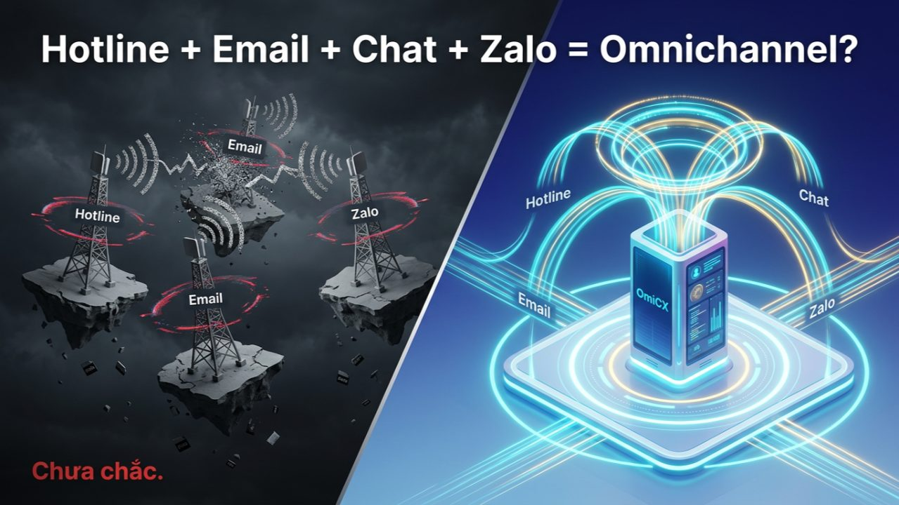
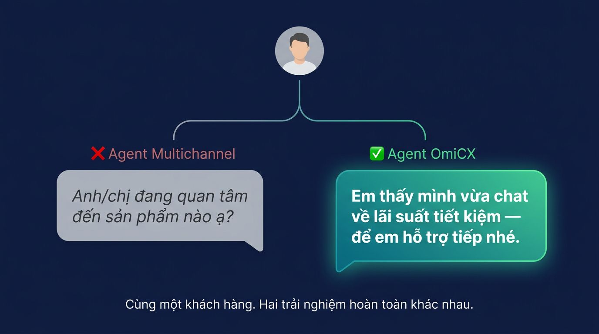
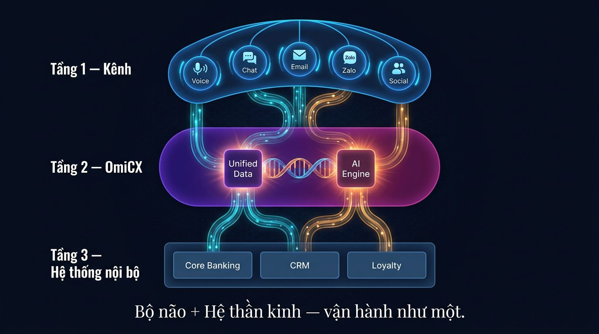

Trang chủ › Blog › Contact Center Insights · Mùa 1
CRM, Omnichannel và trải nghiệm
Omnichannel Contact Center là gì?

Tuần trước, trước khi nghỉ lễ, em có ngồi trao đổi với một Giám đốc CSKH tại công ty bảo hiểm top 5 Việt Nam.
Anh ấy tự tin: "Bên anh đã có Omnichannel rồi. Hotline, email, chat, Zalo — đủ cả."
Em hỏi lại một câu thôi:
"Nếu khách hàng chat với bên anh lúc 9 giờ sáng, rồi gọi hotline lúc 3 giờ chiều — agent có thấy nội dung cuộc chat buổi sáng không?"
Anh ấy dừng lại.
"Cái đó thì... chưa."
Em gật đầu: "Vậy anh đang có Multichannel — không phải Omnichannel."
Đây là sự nhầm lẫn em đã gặp nhiều, ở hầu hết doanh nghiệp trong ngành BFSI.
Và nó không phải lỗi của ai — vì ranh giới giữa hai khái niệm này nghe rất giống nhau, nhưng bản chất hoàn toàn khác.
Multichannel vs Omnichannel — sự khác biệt chỉ gói gọn trong một câu:
Multichannel = cho khách hàng nhiều cửa vào.
Nhưng mỗi cửa dẫn vào một căn phòng riêng biệt, không thông nhau.
Omnichannel = cho khách hàng nhiều cửa vào.
Và dù họ đi qua cửa nào — câu chuyện của họ vẫn tiếp tục từ chỗ đã dừng.
Hãy để em dựng lại một kịch bản thực tế:
Khách hàng chat trên website lúc sáng, hỏi về lãi suất gửi tiết kiệm. Chưa xong, họ gọi hotline chiều để hỏi thêm về thủ tục.
Nếu là Multichannel, agent nhấc máy:
"Anh/chị vui lòng cho biết mình đang quan tâm đến sản phẩm nào ạ?"
Khách hàng thở dài. Kể lại từ đầu.
Nếu là Omnichannel thực thụ, agent nhấc máy:
"Dạ, em thấy mình vừa chat về lãi suất tiết kiệm trên web — để em hỗ trợ tiếp phần thủ tục nhé."
Khách hàng không nói gì. Nhưng họ ghi nhớ cảm giác đó. Đó là khoảng cách giữa "công ty này hiểu tôi" và "tôi phải giải thích lại một lần nữa."

Vậy tại sao Omnichannel thực thụ lại khó đến vậy?
Vì bài toán không nằm ở số lượng kênh.
Nó nằm ở dữ liệu và tích hợp hệ thống — thứ mà người dùng cuối không bao giờ nhìn thấy, nhưng cảm nhận rõ ràng mỗi ngày.
Để dữ liệu "chảy" liền mạch giữa các kênh, anh chị cần:
- ⚙️ Tất cả kênh kết nối về một nền tảng trung tâm duy nhất — một "Single Source of Truth"
- ⚙️ Dữ liệu đồng bộ realtime — không độ trễ, không rơi rụng
- ⚙️ Agent thấy toàn bộ hành trình của khách hàng — không chỉ cuộc gọi hiện tại
- ⚙️ Khi chuyển kênh hoặc chuyển agent — context không được phép mất đi
Nếu thiếu một trong bốn điều đó, anh chị chỉ đang tăng thêm kênh — không tăng trải nghiệm. Thậm chí làm vận hành phức tạp hơn.
Nếu anh chị đã theo dõi series này từ bài #12 và #13, anh chị sẽ nhận ra chúng ta đang hoàn thiện một bức tranh lớn hơn:
Bài #12 — CRM: "Bộ não" của Contact Center — nơi lưu trữ và hiển thị thông tin khách hàng.
Bài #13 — Luồng dữ liệu: "Hệ thần kinh" — dữ liệu phải chảy, không được đứng yên.
Bài #14 này — Omnichannel: Đích đến khi bộ não và hệ thần kinh hoạt động như một thể thống nhất.
Và OmiCX của Minh Phúc Transformation chính là kiến trúc kết nối cả ba tầng đó trong thực tế:
- → Một giao diện duy nhất cho Voice, Chat, Email, Zalo, mạng xã hội — agent không cần quan tâm khách đến từ kênh nào
- → Đồng bộ ngữ cảnh realtime: Dù khách hàng chuyển kênh bao nhiêu lần, thông tin đi theo họ như một bóng hình
- → Zero Context Loss: Chuyển từ chatbot sang agent, từ agent này sang agent khác — toàn bộ lịch sử được truyền đi nguyên vẹn
- → Tích hợp sâu hệ thống ngân hàng: Core banking, thẻ, loyalty — hội tụ về một màn hình

Kết quả không chỉ là trải nghiệm khách hàng tốt hơn. Mà là agent làm việc thông minh hơn và doanh nghiệp ra quyết định dựa trên dữ liệu đầy đủ hơn.
Đầu tư vào Omnichannel không phải là mua thêm phần mềm chat.
Đó là tư duy xóa bỏ rào cản giữa các kênh, các phòng ban, các hệ thống.
Khi dữ liệu thông suốt — doanh nghiệp không chỉ tiết kiệm chi phí vận hành. Họ tạo ra thứ mà bất kỳ khách hàng nào cũng khao khát: cảm giác được nhớ đến.
Multichannel cho khách hàng nhiều cửa vào. Omnichannel đảm bảo họ không bao giờ phải bắt đầu lại.
Một câu hỏi để tự đánh giá — và em thực sự muốn nghe câu trả lời của anh chị👇
Contact Center của anh chị đang ở đâu trên hành trình này?
- 📍 Multichannel — có nhiều kênh nhưng mỗi kênh là một ốc đảo
- 📍 Đang tích hợp — kết nối được một vài kênh nhưng chưa đồng bộ hoàn toàn
- 📍 True Omnichannel — dữ liệu chảy liền mạch, agent thấy toàn bộ hành trình
- 📍 Chưa rõ — cần ngồi đánh giá lại
Và nếu anh chị đang gặp khó khăn lớn nhất ở bước tích hợp nào — hãy comment xuống. em sẽ tổng hợp để viết riêng một bài về roadmap Omnichannel thực tế cho ngành BFSI Việt Nam.